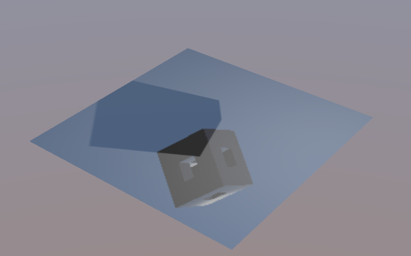
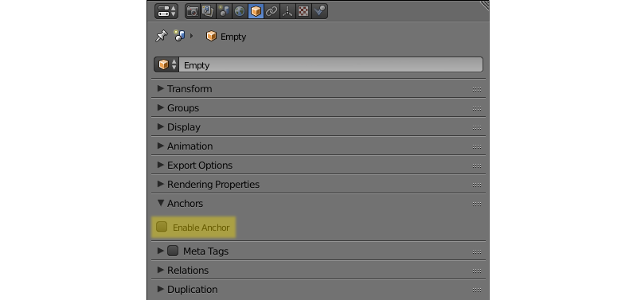
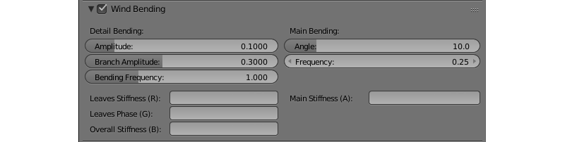
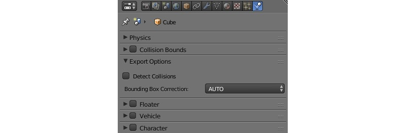
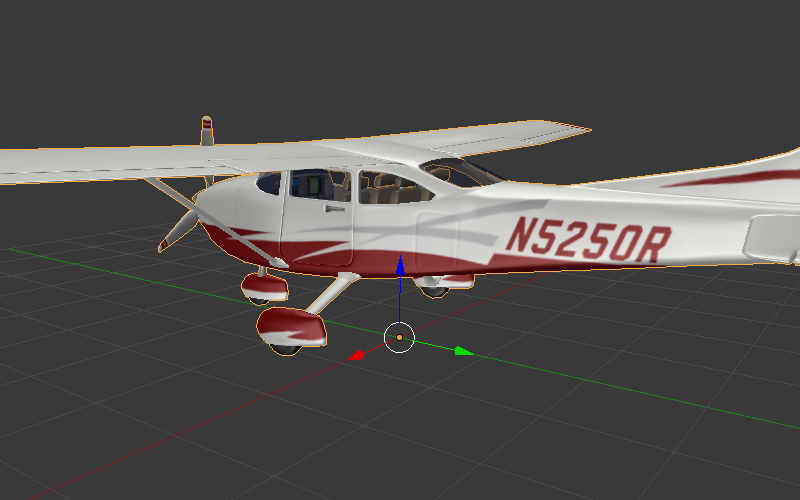
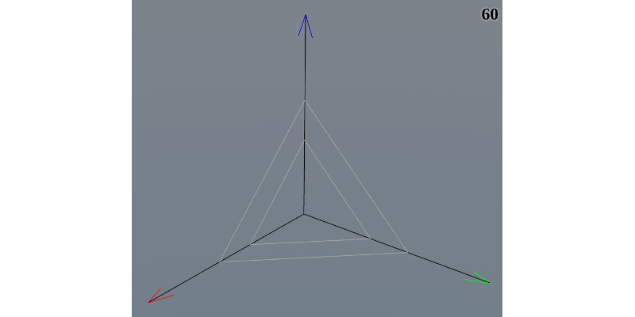

Объекты¶
Содержание
Объекты служат целям размещения компонентов различного типа (мешей, камер, ламп и т.д.) в пространстве 3D сцены.
Типы¶
Движком поддерживаются объекты следующих типов:
пустой (empty)
кривая (curve)
текст (text)
метасфера (metaball)
поверхность (surface)
При экспорте сцены объекты типов CURVE, TEXT, METABALL и SURFACE конвертируются в объекты типа MESH.
Статические и динамические объекты¶
Объект может быть статическим или динамическим.
Статические объекты - объекты, которые невозможно перемещать, анимировать или изменять любым другим способом во время работы приложения. Для повышения быстродействия, такие объекты могут объединены друг с другом, если они имеют одинаковый материал.
Динамические объекты можно перемещать, анимировать и изменять другими способами во время работы приложения. Такие объекты также могут взаимодействовать с другими объектами, в том числе со статическими. Динамические объекты никогда не объединяются друг с другом или со статическими объектами.
Только объекты типов MESH и EMPTY могут быть как статическими, так и динамическими. Все остальные объекты, например CAMERA или ARMATURE, всегда динамические.
Статические объекты типа MESH рендерятся значительно быстрее динамических, поэтому для повышения производительности рекомендуется сводить количество динамических мешей к минимуму. Объекты других типов, как статические, так и динамические, не оказывают существенного влияния на производительность.
Объекты, имеющие анимацию, физику или родителя, являющегося динамическим объектом, рассматриваются как динамические. Динамическими считаются также объекты, контролируемые следующими логическими нодами:
Play AnimationTransform ObjectMove ToInherit Material
Методы API для перемещения, копирования и анимации (как самого объекта, так и его нодового материала) объектов могут применяться только к динамическим объектам. Чтобы обеспечить движение объекта, не имеющего настроек динамического объекта, в его настройках следует активировать опцию Force Dynamic Object.
Настройка¶
Для объектов всех типов поддерживаются расположение в пространстве, указатель на блок данных, родительский объект, принадлежность к группе и ряд свойств, специфичных для Blend4Web.
Вкладка Object¶

Панель Transform¶

- Transform > Location
Координаты местоположения.
- Transform > Rotation
Углы вращения. При повороте объекта доступны все режимы
Rotation Mode, но при создании объектной анимации поддерживаются толькоQuaternion (WXYZ)иXYZ Euler.- Transform > Scale
Масштабирование. Все 3 компонента (x, y, z) должны быть одинаковы. Для физических объектов масштабирование не поддерживается.

Панель Level of Detail¶

- Levels of Detail > Object
Объект, используемый для данного уровня детализации.
- Levels of Detail > Distance
Расстояние, на котором начинается использование данного уровня детализации.
Использование уровней детализации описано в соответствующем разделе.
Панель Animation¶

- Animation > Apply Default Animation
Начать воспроизведение в движке связанной с объектом анимации.
- Animation > Animation Blending
Только для арматурных объектов. Разрешить плавный переход от одной скелетной анимации к другой.
- Animation > Behavior
Поведение анимации при достижении последнего кадра:
Finish Stop- остановить,Finish Reset- остановить и сбросить в нулевой кадр,Loop- циклически повторять.
Панель Export Options¶

- Export Options > Do Not Export
Не экспортировать.
- Export Options > Apply Modifiers
Применить модификаторы объекта при экспорте. При наличии модификатора
SKINрекомендуется применить его перед экспортом, т.к. он сбрасывает слои вертексных цветов и UV-текстур, что может привести к ошибкам экспорта.- Export Options > Apply Scale and Modifiers
Применить масштабирование и модификаторы объекта при экспорте.
- Export Options > Export Vertex Animation
Экспортировать предварительно созданную и сохраненную вертексную анимацию. Актуально только для объектов типа
MESH.- Export Options > Export Shape Keys
Экспортировать ключи деформации. Актуально только для объектов типа
MESH.
Примечание
Свойства Apply Modifiers, Apply Scale And Modifiers, Export Vertex Animation, и Export Shape Keys взаимоисключают друг друга.
Панель Rendering Properties¶

- Rendering Properties > Hidden
Если это свойство активировано, объект будет невидим при запуске сцены.
- Rendering Properties > Hidden Children
Все потомки объекта, а также потомки его потомков будут невидимы при запуске сцены. Этот параметр доступен только если включен параметр
Rendering Properties > Hiddenи у объекта имеются потомки.- Rendering Properties > Do Not Render
Отключить рендеринг объекта (например, вспомогательный объект физики).
Этот параметр недоступен для объектов типа
Empty.- Rendering Properties > Disable Frustum Culling
Отключить оптимизацию отсечением по зоне видимости.
Этот параметр недоступен для объектов типа
Empty.- Rendering Properties > Force Dynamic Object
Принудительно сделать объект динамическим.
- Rendering Properties > Dynamic Geometry & Materials
Включает возможность использовать API для обновления геометрии объекта и наследования материалов.
- Rendering Properties > Line Rendering
Активирует использование объекта для рендеринга линий.
Этот параметр доступен только для объектов типа
Empty.
Панель Shadows¶

- Shadows > Cast
Объект будет отбрасывать тени.
- Shadows> Cast Only
Объект будет отбрасывать тени, при этом сам будет оставаться невидимым. Становится доступным после включения
Shadows > Cast.- Shadows > Receive
Разрешить затенение от прилегающих объектов (получение теней) на объекте.
Панель Billboard¶

- Billboard
Использовать объект в качестве билборда (т.е. автоматически ориентировать его относительно камеры).
- Billboard > Preserve Global Orientation and Scale
Билбординг объекта с учетом его ориентации и масштабирования в мировом пространстве. Объект всегда будет обращен к камере той стороной, которая видна при взгляде на него вдоль направления оси Y в системе координат Blender’а. Становится доступным после включения
Billboard.- Billboard > Billboard Type
Способ ориентирования билборда.
Spherical(по умолчанию) - объект всегда ориентирован к камере одной стороной независимо от угла обзора,Cylindrical- аналогичноSpherical, только вращение ограничено осью Z мирового пространства в Blender. Становится доступным после включенияBillboard.
Панель Reflections¶

- Reflections > Reflexible
При включении объект будет отражаться от зеркальных поверхностей.
- Reflections > Reflexible Only
При включении объект будет отражаться, при этом сам будет оставаться невидимым. Становится доступным после включения
Reflections > Reflexible.Примечание
Если опция
Reflexible Onlyвключена одновременно сShadows > Cast Only, движок не будет отображать сам объект, но будет рассчитывать отражение объекта и тень от него, как показано на изображении ниже.- Reflections > Reflective
При включении объект будет отражать своей поверхностью другие объекты.
- Reflections > Reflection Plane
Текстовое поле для названия пустого объекта, задающего плоскость отражения. Становится доступным после включения
Reflections > Reflective.
{kind=link}
Панель Selection and Outlining¶

- Selection and Outlining > Selectable
Разрешить выделение объекта с помощью мыши или другого устройства ввода.
- Selection and Outlining > Enable Outlining
Разрешить подсвечивание объекта (эффект Outline).
Панель Anchors¶
- Anchors > Enable Anchor
Активирует интерфейс добавления якорей (двухмерных меток) к объектам. Доступно только для объектов типа
EMPTY. Якоря подробно описаны в соответствующем разделе.
{kind=link}
Панель Meta Tags¶

- Meta Tags
Интерфейс добавления мета-тегов на объект:
- Meta Tags > Title
Заголовок объекта.
- Meta Tags > Category
Категория объекта.
- Meta Tags > Description
Описание объекта. В зависимости от значения опции
Description Sourceв это поле заносится либо текст описания непосредственно, либо имя файла, в котором содержится описание.- Meta Tags > Description Source
Тип (источник) описания объекта: текст либо файл с текстом.
Панель Relations¶

- Relations > Parent
Указатель на родительский объект.
Если в качестве родительского объекта выбрана камера, становятся доступными настройки
Viewport Alignment.
Они могут применяться для привязывания объекта к текущей камере. Описаны в главе “Камера”.
Панель Wind Bending¶
- Wind Bending
Включить процедурную анимацию под действием ветра. Подробно описана в разделе, посвященном рендерингу наружных сцен.
Панель Special Effects¶
- Special Effects > Disable Fogging
Отключить туман для объекта.
- Special Effects > Caustics
На объекте будут видны эффекты от прилегающей к нему воды (каустика).
Вкладка Physics¶
{kind=link}
- Detect Collisions
Активировать связанную с объектом физику.
- Floating
Сделать объект плавучим. Подробное описание настроек плавучих объектов можно найти в разделе физика.
- Vehicle
Активировать использование объекта в качестве составной части транспортного средства. Подробное описание настроек транспортных средств можно найти в разделе физика.
- Character
Активировать использование объекта в качестве физического каркаса игрового персонажа. Подробное описание настроек персонажа можно найти в разделе физика.
Ограничители объектов¶
Движок Blend4Web поддерживает следующие ограничители объектов:
Copy Location,Copy Rotation,Copy TransformsиTrack To.
Примечание
При использовании ограничителей объектов в Blend4Web параметр Space игнорируется (его значение всегда считается равным World Space).
Эти ограничители могут быть настроены непосредственно в Blender. Другие типы ограничителей не поддерживаются, однако некоторые методы из модуля constraints работают схожим образом. Среди них:
Метод append_copy_loc() работает так же, как ограничитель
Copy LocationМетод append_copy_rot() работает так же, как ограничитель
Copy RotationМетод append_copy_trans() работает так же, как ограничитель
Copy TransformsМетод append_follow() работает почти так же, как ограничитель
Limit Distance, однако следует заметить, что этот метод не задаёт точного расстояния между объектами (вместо этого он использует минимальную и максимальную дистанции).В качестве аналога ограничителя
Track Toможет использоваться метод append_track().
Прочие ограничители не имеют прямых аналогов, однако в определённой степени их поведение можно воспроизвести при помощи методов API.
Настройки якорей¶
Якоря могут применяться для добавления поясняющих надписей к 3D-объектам. Вне зависимости от позиции камеры, надпись всегда располагается рядом с объектом и следует за ним в случае его анимации.

Аннотация может быть полностью создана в Blender. Для этого достаточно разместить в нужном месте объект типа Empty и включить его использование в качестве “якоря”. Текст аннотации можно изменить в полях Title и Description, доступных на вкладке Meta Tags.
{kind=link}
- Enable Anchor
Активирует интерфейс добавления якорей (двухмерных меток) к объектам. Доступно только для объектов типа
EMPTY.- Type
Тип якоря
Annotation- информация из мета-тегов объектов отображается в раскрывающихся информационных окнах стандартного дизайна.Custom Element- в качестве якоря можно назначить произвольный HTML-элемент с текущей веб-страницыGeneric- якорь, положение которого можно определить с помощью API модуляanchors.
Значение по умолчанию -
Annotation- HTML Element ID
Задаёт ID HTML-элемента, который будет использоваться в качестве якоря. Доступно только если параметр
Typeимеет значениеCustom Element.- Detect Visibility
Определять видимость якоря, т.е. реагировать на перекрытие объекта-якоря другими объектами. Активация опции приводит к падению производельности рендеринга и должна рассматриваться только в случае реальной необходимости.
- Max Width
Ограничить всплывающее информационное окно аннотации выбранным значением (в CSS пикселях). Доступно только если параметр
Typeимеет значениеAnnotation. Значение по умолчанию - 250.
Управление перемещением объектов¶
Примечание
Необходимо обеспечить, чтобы объект, над которым выполняется преобразование, был динамическим.
Для управления перемещением объектов в движке предусмотрены следующие базовые функции модуля transform:
- get_translation()
Получить координаты центра объекта в мировой системе координат. Вариант с одним параметром возвращает новый вектор (неоптимизированный вариант), вариант с двумя требует отдельного вектора для записи результата.
- get_translation_rel()
Аналогично методу
get_translation(), однако если у данного объекта имеется родительский объект, координаты берутся в относительной системе координат, связанной с этим родительским объектом.- set_translation(), set_translation_v()
Переместить центр объекта в указанное место. Первая функция принимает в качестве параметров отдельные координаты, вторая - трёхмерный вектор (
ArrayилиFloat32Array).- set_translation_rel(), set_translation_rel_v()
Аналогично методам
set_translation()иset_translation_v(), однако если у данного объекта имеется родительский объект, координаты задаются в относительной системе координат, связанной с этим родительским объектом.- get_rotation()
Получить кватернион поворота объекта в мировой системе координат. По аналогии с
get_translation()имеется два варианта вызова функции.- get_rotation_rel()
Получить кватернион поворота объекта в системе координат, связанной с родительским объектом. По аналогии с
get_translation_rel()имеется два варианта вызова функции.- set_rotation(), set_rotation_v()
Установить кватернион поворота объекта в мировой системе координат. Первая функция принимает в качестве параметров отдельные координаты, вторая - четырёхмерный вектор (
ArrayилиFloat32Array).- set_rotation_rel(), set_rotation_rel_v()
Установить кватернион поворота объекта в системе координат, связанной с родительским объектом. Первая функция принимает в качестве параметров отдельные координаты, вторая - четырёхмерный вектор (
ArrayилиFloat32Array).- get_scale()
Получить значение коэффициента увеличения объекта в мировой системе координат.
- get_scale_rel()
Установить коэффициент увеличения объекта в системе координат, связанной с родительским объектом.
- set_scale()
Установить коэффициент увеличения объекта в мировой системе координат. Единица соответствует исходному состоянию. Значение меньше единицы - уменьшение. Значение больше единицы - увеличение. Не все объекты могут быть увеличены. В частности, увеличение невозможно для физических объектов.
- set_scale_rel()
Установить коэффициент увеличения объекта в системе координат, связанной с родительским объектом.
- set_rotation_euler(), set_rotation_euler_v()
Установить поворот объекта с помощью углов Эйлера. Используется внутренняя (intrinsic) система поворота YZX (то есть углы следуют в последовательности YZX, сама система отсчёта при этом вращается и занимает каждый раз новое положение).
- set_rotation_euler_rel(), set_rotation_euler_rel_v()
Установить поворот объекта с помощью углов Эйлера в системе координат, связанной с родительским объектом.
- move_local()
Переместить объект относительно своего первоначального положения (в локальной системе координат).
- rotate_x_local(), rotate_y_local(), rotate_z_local()
Повернуть объект относительно своего первоначального положения (в локальной системе координат).
Выбор объектов¶
Для того, чтобы производить какие-либо манипуляции с трёхмерным объектом, необходимо получить ссылку на него. Для этого используется ряд функций API. Ссылка на объект имеет тип Object3D.
- get_object_by_name()
Получить ссылку на объект, основываясь на известном имени объекта.
// ... var obj = m_scenes.get_object_by_name("Object"); // ...
- get_object_by_dupli_name()
Получить ссылку на скопированный объект, используя имя скопированного объекта и имя объекта типа
EMPTY, который использовался для копирования.// ... var obj = m_scenes.get_object_by_dupli_name("Empty", "Object"); // ...
- get_object_by_dupli_name_list()
Получить ссылку на скопированный объект, используя списки (массивы элементов типа
String) имён скопированных объектов и объектов типаEMPTY, использованных для копирования.// ... var obj = m_scenes.get_object_by_dupli_name_list(["Empty1", "Empty2", "Object"]); // ...
- get_object_name_hierarchy()
Возвращает список (массив) имён предков заданного объекта, начиная от старшего предка и заканчивая самим объектом.
// ... var names = m_scenes.get_object_name_hierarchy(obj); // ...
- check_object_by_name()
Проверить, существует ли в сцене объект с указанным именем.
// ... var object_exists = m_scenes.check_object_by_name("Cube"); // ...
- check_object_by_dupli_name()
Проверить, существует ли в сцене скопированный объект с заданным именем и заданным именем объекта типа
EMPTY, который использовался для копирования.// ... var object_exists = m_scenes.check_object_by_dupli_name("Empty", "Cube"); // ...
- check_object_by_dupli_name_list()
Проверить, существует ли в сцене скопированный объект, используя списки (массивы элементов типа
String) имён скопированных объектов и объектов типаEMPTY, использованных для копирования.// ... var object_exists = m_scenes.check_object_by_dupli_name_list(["Empty1", "Empty2", "Object"]); // ...
- get_object_name()
Получить имя объекта, основываясь на известной ссылке на этот объект.
// ... var object_name = m_scenes.get_object_name(obj); // ...
Выделение объектов¶
Чтобы разрешить выделение конкретного объекта, необходимо установить флаг Selectable в панели Selection and Outlining.
Примечание
Следует убедится в том, что в панели Scene > Object Outlining установлено состояние ON или AUTO.
Выделение объекта возможно программно через API, например, в модуле scenes.js имеется функция pick_object, которая по координатам в canvas’е выделяет объект,
// ...
var x = event.clientX;
var y = event.clientY;
var obj = m_scenes.pick_object(x, y);
// ...
или с использованием редактора логики.
Если для выделяемого объекта в панели Object > Selection and Outlining установлены флаги Enable Outlining и Outline on Select, то вызов функции pick_object приведет к активации Outline-анимации.
Примечание
Если выделяемый объект полупрозрачен (имеет тип прозрачности Blend Add или Sort), outline-анимация будет видна только на тех частях объекта, для которых значение прозрачности Alpha выше 0.5.
Копирование объектов (инстансинг)¶
Часто возникает необходимость копирования объектов (инстансинг) во время работы приложения.
- Существует ряд ограничений на копируемые объекты:
тип объекта должен быть
MESHобъект должен быть динамическим (включить настройку
Rendering Properties > Force Dynamic Object)объект должен принадлежать активной сцене
Простое копирование¶
В случае простого копирования для объекта-копии будет использоваться геометрия объекта, с которого осуществлялось копирование. При изменении геометрии на исходном объекте, геометрия изменится и на объекте-копии.
Глубокое копирование¶
При глубоком копировании новый объект будет обладать уникальными для него свойствами, а именно, он будет иметь свою собственную геометрию. То есть при изменении геометрии на объекте-оригинале у объекта-копии геометрия изменяться не будет. Также при глубоком копировании canvas-текстуры на копиях - именно разные текстуры, в то время как при простом копировании - одна и та же. Для такого типа копирования на исходном объекте нужно дополнительно выставить опцию Rendering Properties > Dynamic Geometry.
Для копирования объектов в модуле objects.js предусмотрена функция copy, в которую надо передать идентификатор копируемого объекта, уникальное имя нового объекта и булеву переменную, определяющую тип копирования: true - глубокое, false - простое. По умолчанию будет осуществлено простое копирование.
Созданный при копировании объект необходимо добавить на сцену. Для этого в модуле scenes.js существует функция append_object, куда нужно передать объект, полученный копированием.
// ...
var new_obj = m_objects.copy(obj, "New_name", true);
m_scenes.append_object(new_obj);
m_transform.set_translation(new_obj, 2, 0, 2);
// ...
Удаление объектов¶
Для удаления объектов, в модуле scenes.js предусмотрена функция remove_object, куда надо передать объект. Возможно удаление динамических mesh- и empty-объектов.
// ...
m_objects.remove_object(new_obj);
// ...
Кватернионы¶
Кватернионы представляют собой четырёхмерные векторы, используемые для осуществления поворотов. Использование кватернионов обладает рядом преимуществ перед другими способами представления поворотов:
Не имеет неоднозначности и зависимости от порядка применения поворотов, которые имеют место в случае использования углов Эйлера.
Более эффективное использование памяти (от 2-х до 4-х раз меньше в зависимости от типа используемой матрицы).
Высокая эффективность вычисления серии поворотов, чем при использовании матриц.
Численная устойчивость - компенсация ошибок умножения, возникающих из-за неточности вычислений с плавающей запятой.
Удобный метод интерполяции.
- Кватернионы имеют ряд недостатков:
Поворот вектора с помощью кватерниона более сложная в вычислительном плане операция чем поворот с использованием матрицы.
Использование кватернионов для представления отличных от поворота преобразований (перспективная или ортогональная проекция) затруднено.
Для удобства работы с кватернионами в движке имеется ряд функций:
- quat.multiply
Умножение кватернионов. Умножение кватерниона А на кватернион Б слева A*Б является поворотом на A. То есть у объекта уже имеется некий поворот Б, который мы дополняем новым поворотом на A.
- quat.setAxisAngle
Кватернион представляет собой иную форму записи поворота относительно произвольной оси (вектора) на произвольный угол. Положительное направление поворота отсчитывается против часовой стрелки, если смотреть с конца вектора. Например вызов
quat.setAxisAngle([1,0,0], Math.PI/3, quat)сформирует кватернион, который может быть использован для осуществления поворота относительно оси X на 60 градусов (против часовой стрелки, если смотреть с конца оси X).- quat.slerp
Сферическая интерполяция кватернионов. Используется для осуществления плавного разворота объектов и анимации.
- util.euler_to_quat, util.quat_to_euler.
Преобразование из углов Эйлера и наоборот.
Пример работы с кватернионами¶
Требуется повернуть объект на 60 градусов в горизонтальной плоскости вправо. В программе Blender имеется соответствующая модель с названием “Cessna”.
{kind=link}
Сохраним ссылку на объект в движке в переменной aircraft:
var aircraft = m_scenes.get_object_by_name("Cessna");
Осуществим поворот:
Повороту вправо соответствует поворот по часовой стрелке, т.е. в отрицательном направлении.
60 градусов = \(\pi/3\) радиан.
В итоге получаем:
// compose quaternion
var quat_60_Z_neg = m_quat.setAxisAngle([0, 0, 1], -Math.PI/3, m_quat.create());
// get old rotation
var quat_old = m_transform.get_rotation(aircraft);
// left multiply: quat60_Z_neg * quat_old
var quat_new = m_quat.multiply(quat_60_Z_neg, quat_old, m_quat.create());
// set new rotation
m_transform.set_rotation_v(aircraft, quat_new);
Оптимизированный вариант, не приводящий к созданию новых объектов:
// cache arrays as global vars
var AXIS_Z = new Float32Array([0, 0, 1])
var quat_tmp = new Float32Array(4);
var quat_tmp2 = new Float32Array(4);
...
// rotate
m_quat.setAxisAngle(AXIS_Z, -Math.PI/3, quat_tmp);
m_transform.get_rotation(aircraft, quat_tmp2);
m_quat.multiply(quat_tmp, quat_tmp2, quat_tmp);
m_transform.set_rotation_v(aircraft, quat_tmp);
Перемещение с помощью векторов TSR¶
Удобным способом управления перемещением объектов является использование специальных векторов, имеющих следующий формат:
\([T_x, T_y, T_z, S, R_x, R_y, R_z, R_w]\)
Здесь \(T_x, T_y, T_z\) - компоненты вектора перемещения, \(S\) - масштаб, \(R_x, R_y, R_z, R_w\) - компоненты кватерниона поворота. Отсюда следует название вектора: TSR или TSR-8.
Для работы с данными векторами существует специальный модуль tsr, а также методы set_tsr()/get_tsr() модуля transform.
Визуализация линий¶
Движок Blend4Web также способен визуализировать линии, заданные в виде набора точек.
{kind=link}
Методы API для собственно рендеринга линий находятся в модуле geometry, а стиль (т.е. толщина и цвет) линии устанавливается с помощью метода set_line_params() из модуля material.
Для рендеринга линий в сцене должен присутствовать по крайней мере один объект типа Empty с активированной опцией Line Rendering.
Для того, чтобы визуализировать линию, необходимо прежде всего получить ссылку на объект типа Empty. При рендеринге линий начальная точка этого объекта будет использоваться как центр координат.
Сама линия визуализируется при помощи метода API draw_line(). Его первый параметр - ссылка на объект типа Empty, а второй - массив вершин, используемых для построения линии. У этого метода также есть третий (опциональный) параметр, определяющий, визуализируется ли непрерывная линия или набор отрезков, заданных парами вершин (в этом случае количество вершин должно быть чётным).
Если объект типа Empty используется для рендеринга более чем одной линии за раз, видна будет только последняя линия. Для рендеринга нескольких линий следует использовать несколько Empty.
Следующий пример демонстрирует визуализацию фрагмента фигуры, приведённой на изображении выше, с помощью линий:
var m_scenes = require("scenes");
var m_material = require("material");
var m_geometry = require("geometry");
var m_rgba = require("rgba");
...
//setting up Empty object for line rendering
var line_1 = m_scenes.get_object_by_name("MyEmpty_1");
//setting up style parameters for the lines
m_material.set_line_params(line_1, { width: 3
color: m_rgba.from_values(0, 0, 0, 1.0)
});
//coordinates for main axes
var points_1 = new Float32Array([0, 0, 0, 5, 0, 0, 0, 0, 0, 0, 5, 0, 0, 0, 0, 0, 0, 5]);
//drawing main axes
m_geometry.draw_line(line_1, points_1, true);
Этот фрагмент кода визуализирует только главные координатные оси, т.к. полный код был бы слишком длинным и монотонным. Прочие элементы объекта создаются тем же образом.
Уровни детализации (LOD)¶
Общая информация¶
ЛОДы (Levels Of Detail) представляют собой несколько уровней детализации одного объекта. Они применяются для оптимизации, которая состоит в том, что при удалении отрисовывается менее детальный объект, например, низкополигональный с примитивным материалом. Это позволяет снизить нагрузку на видеокарту, при этом не сильно потеряв в качестве изображения, т.к. на дальней дистанции многие детали оригинального объекта все равно не будут различимы.
Использование ЛОДов оправдано на больших сценах со множеством объектов, в других случаях выигрыш в FPS может быть и не таким существенным. Наиболее подходят для этого крупные игровые локации, вроде острова, сельской местности, города и т.д.
Настройка ЛОДов осуществляется в Блендере при помощи панели Levels of Detail.

Здесь для каждого конкретного объекта можно настроить его уровни детализации и расстояние, на котором будет происходить переключение между ними. В качестве такого уровня предлагается выбрать другой объект. Очевидное правило - чем ниже находится уровень в списке, тем более простым должен быть соответствующий объект.
Упрощать можно по-разному: можно уменьшать полигональность объекта, облегчать материалы (особенно нодовые), не использовать эффекты вроде теней, анимации, Wind Bending’а и т.д. - все, что даст удовлетворительный результат при взгляде на этот объект с указанной дистанции.
Количество уровней стоит настраивать по своему усмотрению с учетом общего масштаба сцены.

Уровни детализации деревьев: слева - оригинальный объект, справа - его ЛОД
Специфика и отличия от BGE¶
Есть ряд рекомендаций по настройке ЛОДов для использования их в движке. Также, как известно, в Blender в режиме BGE присутствует и своя система ЛОДов, настраиваемая похожим образом, но с существенными отличиями, которые стоят упоминания.
При назначении ЛОД-объекта на другой объект, позиция ЛОДа никак не изменится. Поэтому, чтобы в движке объекты совпали, необходимо вручную разместить их в одном и том же месте в Блендере. Здесь кроется отличие от BGE, где при выборе ЛОДа, он автоматически смещается в центр объекта, который его использует.
Если требуется назначить один и тот же ЛОД-объект на множестве разных объектов (например, однотипные деревья, дома, машины, кусты...), то необходимо его скопировать и назначать уже его копии, т.е. размножить в стольких экземплярах, сколько объектов его будут использовать. В отличие от BGE, где при выборе одного ЛОД-объекта для многих он автоматически дублируется, при загрузке в движке этого не происходит. Для упрощения создания однотипных объектов рекомендуется объединять главный объект и все его ЛОДы в одну группу, которую затем просто дуплицировать при помощи EMPTY-объектов.
Если предполагается, что объект будет изменять свое положение в пространстве, то стоит привязать к нему его ЛОДы родительской связью в Блендере, чтобы они повторяли его трансформации.
Плавная смена ЛОДов¶
Один из наиболее заметных недостатков системы ЛОДов - резкая смена уровней детализации, очевидный и иногда раздражающий эффект.
В движке доступна возможность плавной смены уровней на основе альфа-теста.

Постепенная смена оригинального объекта ЛОДом
Соответствующая настройка находится на панели Scene->Object Clustering & LOD и называется LOD Smooth Transitions.
С её помощью можно указать движку использовать ли плавную смену, и если да, то для каких типов объектов. Стоит отметить, что её включение может ощутимо снизить производительность приложения в зависимости от количества настроенных ЛОД-объектов и их материалов.
Примечание
Плавная смена ЛОДов не всегда желательна. Например, при телепортировании камеры издалека к интересующему объекту не хотелось бы, чтобы смена уровня детализации происходила прямо перед глазами. Для этого существует настройка конфигурации движка lod_leap_smooth_threshold, указывающая порог расстояния (в метрах), которое может пройти камера в течение одного кадра. Если он будет превышен, то смена ЛОДов произойдет моментально. Таким образом можно убрать плавную смену ЛОДов при резком движении/телепортации камеры.
var m_cfg = require("config"); m_cfg.set("lod_leap_smooth_threshold", 5); // 5 meters
Гистерезис¶
Смена уровней детализации происходит на определённых дистанциях от объекта, иными словами, границах между уровнями, которые настраиваются на панели Levels of Detail. Если камера движется непосредственно вблизи такой границы, то может её часто пересекать, а значит и часто активировать смену ЛОД-объектов. Такая ситуация сделает процесс переключения уровней детализации очень заметной, что нежелательно.
Для устранения этой проблемы используется настройка Max LOD Hysteresis Interval на панели Scene->Object Clustering & LOD. Она задает интервал в метрах, который будет служить зазором при переключении от одного ЛОДа к другому и обратно.
Например, при настройке Max LOD Hysteresis Interval равной 4м. и границе между уровнями детализации 20 м. переключение между ними в одну сторону будет происходить на расстоянии 18 м., а в другую - на 22 м. Таким образом будет решена проблема частого переключения между ЛОДами, благодаря тому, что между ними не будет четкой границы. Данная настройка адаптивна и подстроится под разную дистанцию ЛОД-объектов, уменьшая установленный интервал, если потребуется.